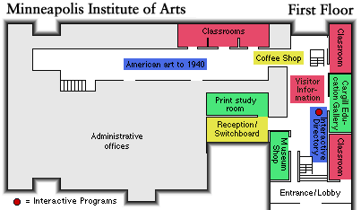
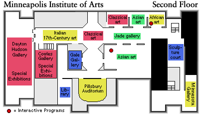
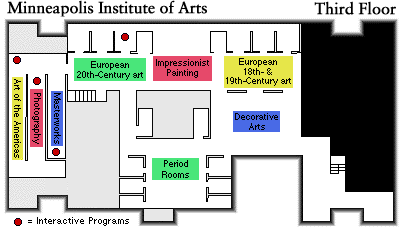

The Minneapolis Institute of Arts
Main Menu ~ Special Exhibitions ~ Permanent Collection Galleries
Interactive Maps
These maps show the layout of the Minneapolis Institute of Arts, floor-by-floor. You can click on the name of a color-coded gallery or service area for more information on that particular collection or service. Also included are interactive touchscreen and audio programs. Clicking on red dots will lead you to more information on these programs. Note: When returning to the interactive maps from another page, be sure and wait until the maps have completely redrawn in order for them to work accurately.
 1st Floor Map, 11k
 2nd Floor Map, 11k
 3rd Floor Map, 11k
Main Menu ~ Special Exhibitions ~ Permanent Collection Galleries